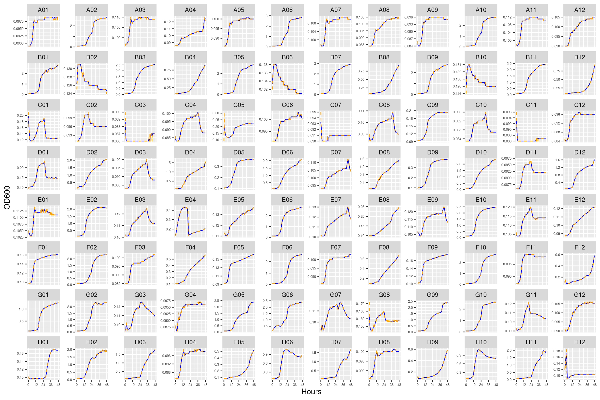
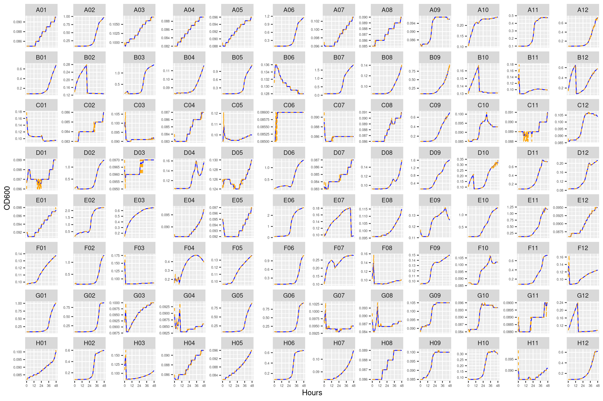
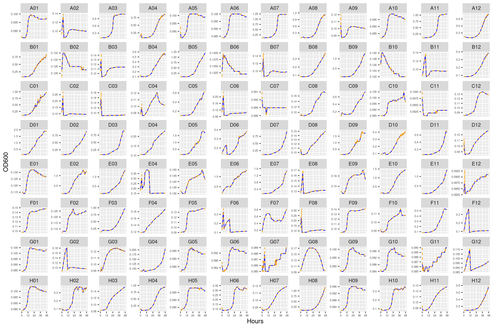
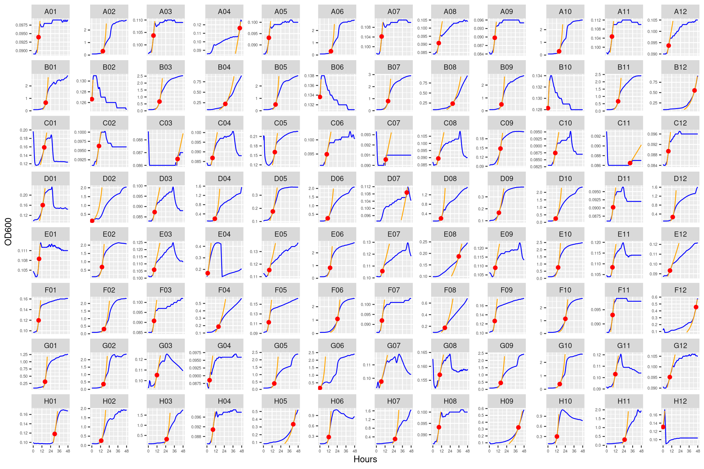
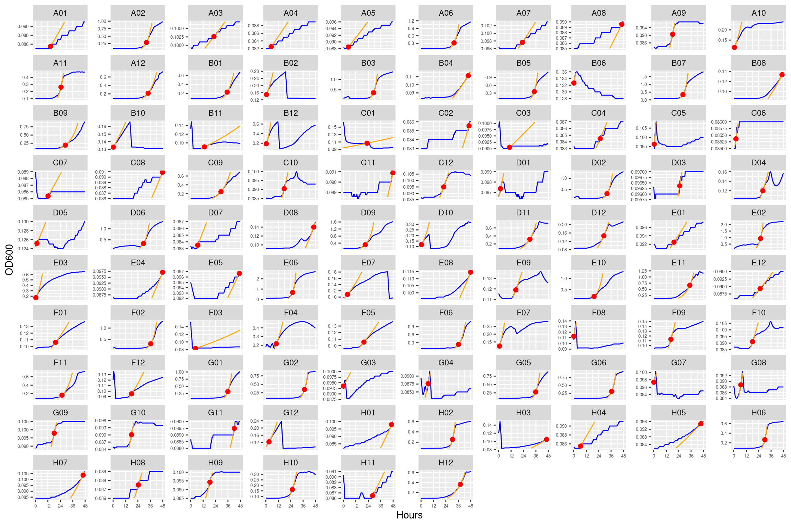
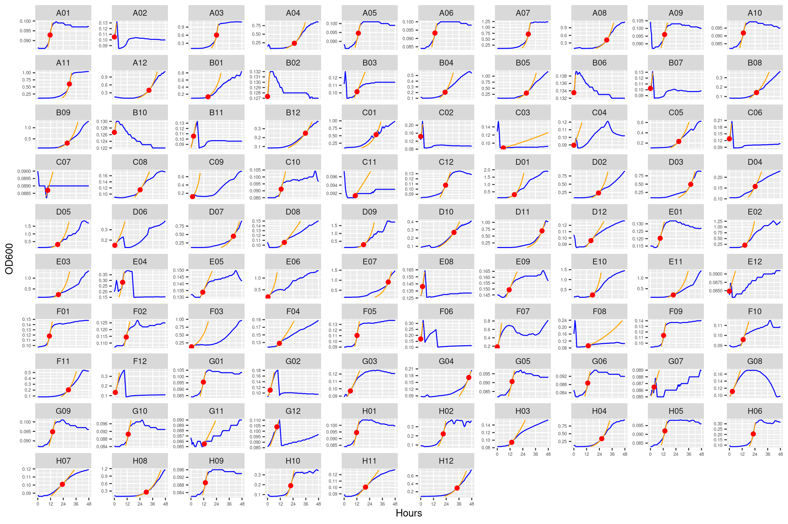

Formatting growth curves from Synergy H1
1 Setup
1.1 Libraries
1.2 Global variables
2 Tidying growth curves from Synergy H1 multimode microplate reader
2.1 Read growth curves
Show/hide code
plate01 <- readxl::read_xlsx(here::here(data_raw, "biolog_ecoplate_1287A", "1287A_raw_data.xlsx"), sheet = 3, skip = 1) %>%
# set interval start to be first cell and make all intervals relative to that
# use time_length to just create an hours variable of type numeric
mutate(seconds = lubridate::time_length(lubridate::interval(Time[1], Time), unit = "second")) %>%
tidyr::pivot_longer(c(-seconds, -Time), names_to = "well", values_to = "OD600") %>%
mutate(hours = lubridate::time_length(seconds, unit = "hours")) %>%
# converting the well format so it matches the samplesheet
mutate(well = paste0(str_extract(well, "^[A-H]"), str_pad(str_extract(well, "\\d+"), width = 2, pad = "0", side = "left"))) %>%
dplyr::select(seconds, hours, well, OD600) %>%
# create a plate variable for later combining
mutate(plate_name = "plate01")
plate02 <- readxl::read_xlsx(here::here(data_raw, "biolog_ecoplate_1287E_1977A", "1287E_1977A_rawdata.xlsx"), sheet = 3, skip = 1) %>%
# set interval start to be first cell and make all intervals relative to that
# use time_length to just create an hours variable of type numeric
mutate(seconds = lubridate::time_length(lubridate::interval(Time[1], Time), unit = "second")) %>%
tidyr::pivot_longer(c(-seconds, -Time), names_to = "well", values_to = "OD600") %>%
mutate(hours = lubridate::time_length(seconds, unit = "hours")) %>%
# converting the well format so it matches the samplesheet
mutate(well = paste0(str_extract(well, "^[A-H]"), str_pad(str_extract(well, "\\d+"), width = 2, pad = "0", side = "left"))) %>%
dplyr::select(seconds, hours, well, OD600) %>%
# create a plate variable for later combining
mutate(plate_name = "plate02")
plate03 <- readxl::read_xlsx(here::here(data_raw, "biolog_ecoplate_1977A_1977E", "1977A_1977E_rawdata.xlsx"), sheet = 3, skip = 1) %>%
# set interval start to be first cell and make all intervals relative to that
# use time_length to just create an hours variable of type numeric
mutate(seconds = lubridate::time_length(lubridate::interval(Time[1], Time), unit = "second")) %>%
tidyr::pivot_longer(c(-seconds, -Time), names_to = "well", values_to = "OD600") %>%
mutate(hours = lubridate::time_length(seconds, unit = "hours")) %>%
# converting the well format so it matches the samplesheet
mutate(well = paste0(str_extract(well, "^[A-H]"), str_pad(str_extract(well, "\\d+"), width = 2, pad = "0", side = "left"))) %>%
dplyr::select(seconds, hours, well, OD600) %>%
# create a plate variable for later combining
mutate(plate_name = "plate03")3 Format growth curves
3.1 Read sample metadata
Show/hide code
samplesheet01 <- readxl::read_xlsx(here::here(data_raw, "biolog_ecoplate_1287A", "samplesheet_1287A.xlsx")) %>%
mutate(strainID = paste0("HAMBI_", strain)) %>%
mutate(plate_name = "plate01")
samplesheet02 <- readxl::read_xlsx(here::here(data_raw, "biolog_ecoplate_1287E_1977A", "samplesheet_1287E_1977A.xlsx")) %>%
mutate(strainID = paste0("HAMBI_", strain)) %>%
mutate(plate_name = "plate02")
samplesheet03 <- readxl::read_xlsx(here::here(data_raw, "biolog_ecoplate_1977A_1977E", "samplesheet_1977A_1977E.xlsx")) %>%
mutate(strainID = paste0("HAMBI_", strain)) %>%
mutate(plate_name = "plate03")3.2 Join with metadata to remove ununsed samples
Show/hide code
ecoplate_gcurves_sm <- bind_rows(plate01, plate02, plate03) %>%
left_join(bind_rows(samplesheet01, samplesheet02, samplesheet03), by = join_by(well, plate_name)) %>%
dplyr::group_by(plate_name, well) %>%
dplyr::mutate(OD600_rollmean = slider::slide_dbl(OD600, mean, .before = 2, .after = 2)) %>%
ungroup() %>%
relocate(OD600_rollmean, .after = "OD600")
readr::write_tsv(ecoplate_gcurves_sm, here::here(data, "ecoplate_gcurves_smooth.tsv"))4 Inspect growth curves
4.1 plate01 (Ancestral HAMBI_1287 ANC)
This plate contains three replicates for the ancestral form of HAMBI_1287



4.2 Conclusions
Growth curves all look mostly reasonable. For just a couple of the carbon substrates there are some strange features (e.g., L-asparagine for HAMBI_1977). Can proceed with the analysis.
5 Growth curve statistics
Loading required package: latticeLoading required package: deSolveUsing the tool growthrates to estimate mu_max. I have found this works a lot better the gcplyr and is more convenient than using another tool outside of R. Nonparametric estimate growth rates by spline is very fast. Fitting to a model takes more time resources. Generally it is best to try multiple approaches and to visualize/check the data to make sure it makes sense.
5.1 Spline based estiamte
Smoothing splines are a quick method to estimate maximum growth. The method is called nonparametric, because the growth rate is directly estimated from the smoothed data without being restricted to a specific model formula.
From growthrates documentation:
The method was inspired by an algorithm of Kahm et al. (2010), with different settings and assumptions. In the moment, spline fitting is always done with log-transformed data, assuming exponential growth at the time point of the maximum of the first derivative of the spline fit. All the hard work is done by function smooth.spline from package stats, that is highly user configurable. Normally, smoothness is automatically determined via cross-validation. This works well in many cases, whereas manual adjustment is required otherwise, e.g. by setting spar to a fixed value [0, 1] that also disables cross-validation.
5.1.1 Fit
5.1.2 Results
5.1.3 Predictions
Show/hide code
many_spline_xy <- purrr::map(many_spline@fits, \(x) data.frame(x = x@xy[1], y = x@xy[2])) %>%
purrr::list_rbind(names_to = "id")
many_spline_fitted <- purrr::map(many_spline@fits, \(x) data.frame(x@FUN(x@obs$time, x@par))) %>%
purrr::list_rbind(names_to = "id") %>%
dplyr::rename(hours = time, predicted = y) %>%
dplyr::left_join(ecoplate_gcurves_sm, by = dplyr::join_by(id, hours)) %>%
dplyr::group_by(id) %>%
# this step makes sure we don't plot fits that go outside the range of the data
dplyr::mutate(predicted = dplyr::if_else(dplyr::between(predicted, min(OD600_rollmean), max(OD600_rollmean)), predicted, NA_real_)) %>%
dplyr::ungroup()5.1.4 Plot
5.1.4.1 Plate01 (ANC_1287)

5.1.4.2 Plate02 (EVO_1287 and ANC_1977)

5.1.4.3 Plate03 (ANC_1977 and EVO_1977)

5.2 AUC
Calculates AUC using DescTools package
Show/hide code
many_auc_res <- ecoplate_gcurves_sm %>%
dplyr::summarize(auc = DescTools::AUC(hours, OD600_rollmean),
max_od = max(OD600_rollmean),
min_od = min(OD600_rollmean),
.by = id) %>%
dplyr::left_join(dplyr::distinct(dplyr::select(ecoplate_gcurves_sm, plate_name:id)), by = join_by(id)) %>%
dplyr::select(-id) %>%
dplyr::relocate(auc, max_od, min_od, .after="strainID")